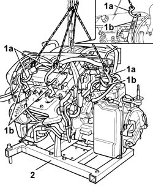
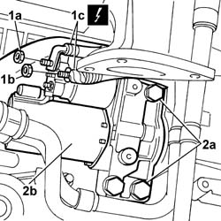
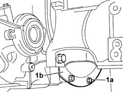
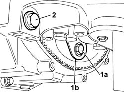
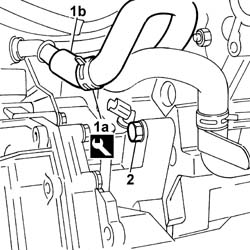
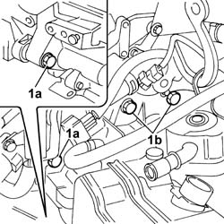
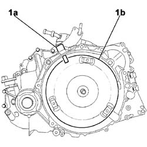
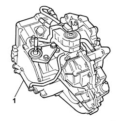
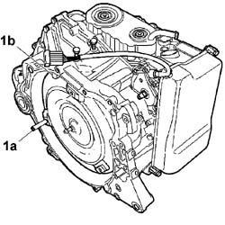

2130A10 AUTOMATIC TRANSMISSION - R + R
- Path
- Procedures > 21 GEARBOX UNIT > 2130 AUTOMATIC TRANSMISSION WITH DIFFERENTIAL > 2130A AUTOMATIC TRANSMISSION ASSEMBLY > 2130A10 AUTOMATIC TRANSMISSION - R + R
- Kind
- repair procedure (removal / refitting; the operation number is the code)
- Applies to
- engines: 3.0 24V V6; all production periods
- Interactive page
- https://sloeber94.github.io/elrnDB-fUlss/en/#/179007244
Applies to: engines: 3.0 24V V6; all production periods
 Removing
Removing
 Refitting
Refitting- Position the vehicle on the lift.
- Disconnect the negative battery terminal.
Op. 7055B54 UNDER-ENGINE GUARD - R R
Op. 4450B12 FRONT OR REAR WHEELS (TWO) - R+R
Op. 7055B90 LEFT FRONT WHEEL ARCH LINER - R.R.
Op. 7055B91 RIGHT FRONT WHEEL ARCH LINER - R.R.
Op. 4130B10 POWER STEERING FLUID RESEVOIR R R
Op. 4130B12 POWER STEERING FLUID RESERVOIR MOUNTING/BRACKETS - POSITION
Op. 0010T84 COOLANT FOR AIR CONDITIONING SYSTEM DEHYDRATE AND RECHARGE
Op. 5540B78 LEFT FRONT LIGHT CLUSTER WITH TURN SIGNAL AND FOGLAMP R R
Op. 5540B79 RIGHT FRONT LIGHT CLUSTER WITH TURN SIGNAL AND FOGLAMP R R
Op. 1048A47 SLEEVE FROM RIGID PIPE TO THROTTLE BODY - R R
Op. 1048A10 AIR CLEANER FILTERING ELEMENT - REPLACE
Op. 5010B18 CLIMATE CONTROL UNIT AIR INTAKE - R.R.
Op. 5050B34 WINDSCREEN WIPER ARM/S COMPLETE WITH BLADE - R+R
Op. 7210E22 WINDSCREEN BASE TRIM
Op. 1088B10 ENGINE COOLING TANK - R + R
Op. 1068A54 POTENTIOMETER ON ACCELERATOR CONTROL - R.R.
Op. 1040B32 FUEL FILLER PIPE UNION SLEEVE - R + R
Op. 7055B65 ENGINGE BAY DUSTGUARD PROTECTION IN LEFT FRONT WHEEL ARCH R R
Op. 1048A23 COLD AIR INTAKE - R R
Op. 1008C10 POWER UNIT UPPER REACTION LINK R R
Op. 1004B14 POWER UNIT WITH AUTOMATIC TRANSMISSION R + R
1. Secure the power unit to a lifting device using the hooks (1a) fitted in the special mounting points (1b).
2. Undo the fixing bolts on the mounting brackets and remove the power unit from the tool for removing and refitting the engine.
Applies to: engines: 3.0 24V V6; all production periods
1. Position the power unit (1a) on a support (1b).

Applies to: engines: 3.0 24V V6; all production periods
1. Undo the nuts (1a) and (1b) and disconnect the leads (1c) from the starter motor.
Description | Connector | |
|---|---|---|
1c | Starter motor | See A020 Starter motor |
2. Undo the retaining bolts (2a) and remove starter motor (2b) from the engine.

Applies to: engines: 3.0 24V V6; all production periods
- Lift the power unit to gain access to the engine flywheel guard fastenings.
1. Undo the retaining bolts (1a) and remove flywheel guard (1b).

Applies to: engines: 3.0 24V V6; all production periods
- Rotate the flywheel to gain access to the bolts fixing the torque converter coupling to the flywheel.
1. Undo the bolts fixing the torque converter coupling to the flywheel.
2. Undo the bolt fixing the gearbox to the engine.

Applies to: engines: 3.0 24V V6; all production periods
- Rest the engine on the support once again, then:
1. Loosen the bands (1a) using the special tool and detach the coolant return pipe (1b) from the transmission fluid heat exchanger to the engine.
Description | Code | Function | |
|---|---|---|---|
1a | Caliper | 1.881.138.000 | Band opening |
2. Undo the bolt fixing the gearbox to the engine.

Applies to: engines: 3.0 24V V6; all production periods
1. Undo the bolts (1a) and (1b) fixing the automatic transmission to the engine.

Applies to: engines: 3.0 24V V6; all production periods
Fit a suitable size bracket (1a) in the housing for the rpm sensor to stop the torque converter (1b) sliding.

Applies to: engines: 3.0 24V V6; all production periods
1. Detach and remove the automatic transmission from the engine with the help of a second mechanic and place it safely.

Applies to: engines: 3.0 24V V6; all production periods
Refitting
Removing1 Fit a centering guide ( ø 10 mm) (1a) for the correct matching of the automatic transmission and the engine.
Remove the torque converter retaining bracket (1b).

Applies to: engines: 3.0 24V V6; all production periods
- With the help of a second mechanic, move the gearbox close to the engine, positioning the centering guide by one of the three openings in the converter mounting coupling.
- Tighten the bolts fixing the gearbox to the engine to the recommended torque
Value daNm | Fastening | Component | Ø | |
|---|---|---|---|---|
- | 6.5 | bolts | Automatic Transmission - Removing and Refitting | - |
- Lift the power unit. undo the centering guide and pre-tighten the bolts fixing the torque converter coupling to the flywheel to the recommended torque.
Value daNm | Fastening | Component | Ø | |
|---|---|---|---|---|
- | 2 | bolts | Automatic Transmission - Removing and Refitting | - |
- Resume the tightening until the recommended torque is produced.
Value daNm | Fastening | Component | Ø | |
|---|---|---|---|---|
- | 6 | bolts | Automatic Transmission - Removing and Refitting | - |
- Position the flywheel guard and tighten the fixing bolts.
- Connect the coolant return pipe from the automatic transmission fluid heat exchanger to the engine and, renew the retaining bands, using the special tool.
Description | Code | Function | |
|---|---|---|---|
1a | Caliper | 1.881.138.000 | Band opening |
- Position the starter motor and tighten the bolts.
- Connect the electrical leads to the starter motor terminals and tighten the nuts.
Description | Connector | |
|---|---|---|
- | Starter motor | See A020 Starter motor |
Op. 1004B14 POWER UNIT WITH AUTOMATIC TRANSMISSION R + R
Op. 1008C10 POWER UNIT UPPER REACTION LINK R R
Op. 1048A23 COLD AIR INTAKE - R R
Op. 7055B65 ENGINGE BAY DUSTGUARD PROTECTION IN LEFT FRONT WHEEL ARCH R R
Op. 1040B32 FUEL FILLER PIPE UNION SLEEVE - R + R
Op. 1068A54 POTENTIOMETER ON ACCELERATOR CONTROL - R.R.
Op. 1088B10 ENGINE COOLING TANK - R + R
Op. 7210E22 WINDSCREEN BASE TRIM
Op. 5050B34 WINDSCREEN WIPER ARM/S COMPLETE WITH BLADE - R+R
Op. 7055B54 UNDER-ENGINE GUARD - R R
Op. 5010B18 CLIMATE CONTROL UNIT AIR INTAKE - R.R.
Op. 1048A10 AIR CLEANER FILTERING ELEMENT - REPLACE
Op. 1048A47 SLEEVE FROM RIGID PIPE TO THROTTLE BODY - R R
Op. 5540B79 RIGHT FRONT LIGHT CLUSTER WITH TURN SIGNAL AND FOGLAMP R R
Op. 5540B78 LEFT FRONT LIGHT CLUSTER WITH TURN SIGNAL AND FOGLAMP R R
Op. 0010T84 COOLANT FOR AIR CONDITIONING SYSTEM DEHYDRATE AND RECHARGE
Op. 4130B12 POWER STEERING FLUID RESERVOIR MOUNTING/BRACKETS - POSITION
Op. 4130B10 POWER STEERING FLUID RESEVOIR R R
Op. 7055B91 RIGHT FRONT WHEEL ARCH LINER - R.R.
Op. 7055B90 LEFT FRONT WHEEL ARCH LINER - R.R.
Op. 4450B12 FRONT OR REAR WHEELS (TWO) - R+R
Op. 7055B54 UNDER-ENGINE GUARD - R R
- Connect the negative battery terminal.
Description | Connector | |
|---|---|---|
Battery | A001 |
Op. 0010T84 COOLANT FOR AIR CONDITIONING SYSTEM DEHYDRATE AND RECHARGE
Op. 0010T70 POWER ASSISTED STEERING FLUID - REPLACE
Op. 0010T45 AUTOMATIC TRANSMISSION FLUID - CHECK LEVEL AND TOP UP IF NECESSARY
Op. 0010T20 COOLANT CHECK DENSITY AND TOP UP IF NECESSARY
Op. 0010T11 ENGINE OIL CHECK LEVEL AND TOP UP
- Remove the vehicle from the lift.
Topics linked from this page (26)
- 0010T11 ENGINE OIL CHECK LEVEL AND TOP UP
- 0010T45 AUTOMATIC TRANSMISSION FLUID CHECK LEVEL AND TOP UP IF NECESSARY
- 0010T20 COOLANT CHECK DENSITY AND TOP UP IF NECESSARY
- 0010T70 POWER ASSISTED STEERING FLUID - REPLACE
- 0010T84 COOLANT FOR AIR CONDITIONING SYSTEM DEHYDRATE AND RECHARGE
- 1004B14 POWER UNIT WITH AUTOMATIC TRANSMISSION R + R
- 1008C10 POWER UNIT UPPER SUPPORT - R R
- 1040B32 FUEL FILLER PIPE UNION SLEEVE - R + R
- 1048A10 AIR FILTER ASSEMBLY - R.R.
- 1048A23 COLD AIR INTAKE - R R
- 1048A47 SLEEVE FROM RIGID PIPE TO THROTTLE BODY - R R
- 1068A54 POTENTIOMETER ON ACCELERATOR CONTROL - R.R.
- 1088B10 ENGINE COOLING TANK - R + R
- 4130B10 POWER STEERING FLUID RESEVOIR R R
- 4130B12 POWER STEERING FLUID RESERVOIR MOUNTING/BRACKETS - POSITION
- 4450B12 FRONT OR REAR WHEELS (TWO) - R+R
- 5010B18 CLIMATE CONTROL UNIT AIR INTAKE - R.R.
- 5050B34 WINDSCREEN WIPER ARM/S COMPLETE WITH BLADE - R+R
- 5540B78 LEFT FRONT LIGHT CLUSTER WITH TURN SIGNAL AND FOGLAMP R R
- 5540B79 RIGHT FRONT LIGHT CLUSTER WITH TURN SIGNAL AND FOGLAMP R R
- 7055B54 UNDER-ENGINE GUARD - R R
- 7055B65 ENGINGE BAY DUSTGUARD PROTECTION IN LEFT FRONT WHEEL ARCH R R
- 7055B90 LEFT FRONT WHEEL ARCH LINER - R.R.
- 7055B91 RIGHT FRONT WHEEL ARCH LINER - R.R.
- 7210E22 WINDSCREEN BASE TRIM
- E2010 SIDE LIGHTS/NUMBER PLATE LIGHT WIRING DIAGRAM